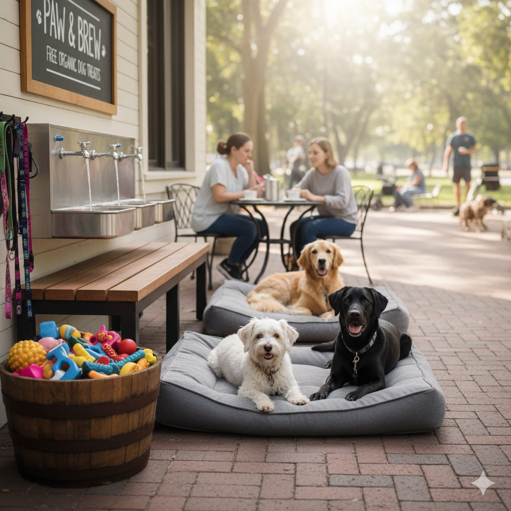

Waarom voorzieningen belangrijk zijn
Voor veel baasjes voelt het fijner om een koffiestop te maken wanneer ook de hond wordt verzorgd. Een bak water of een hondensnack kan een groot verschil maken, vooral op warme dagen of na een lange wandeling. Zulke extra's zorgen ervoor dat jij en je hond samen écht kunnen ontspannen.
Wat je kunt verwachten aan extra's
Niet elk café denkt aan honden, maar de zaken die dat wel doen, springen er vaak uit qua gastvrijheid. Hier vind je voorbeelden van voorzieningen die hondeneigenaren waarderen.
Voorbeelden van extra voorzieningen:
- Waterbakken: vers water beschikbaar voor honden.
- Hondensnacks: koekjes of kauwsnacks speciaal voor viervoeters.
- Hondvriendelijke zithoeken: plekken waar honden rustig kunnen liggen.
- Personeel dat honden verwelkomt: een glimlach én een aai.
Onze tips voor hondvriendelijke cafés met extra's
In Alkmaar zijn er enkele koffiestops die bekendstaan om hun
hondvriendelijkheid en extra voorzieningen. Hier zijn een paar
suggesties:
1. Café Hond & Mens – bekend om gratis waterbakken en
hondensnoepjes.
2. Koffie & Kwispel – gezellig café waar honden een eigen hoekje
hebben.
3. Brasserie De Hout – naast het park, altijd water beschikbaar
voor honden.

Tips voor een zorgeloze pauze
Ook al bieden sommige cafés extra's, het is slim om zelf voorbereid te zijn. Neem altijd een eigen flesje water mee voor noodgevallen en houd hondensnacks bij de hand. Zo weet je zeker dat jouw hond tijdens de stop tevreden en verzorgd is.